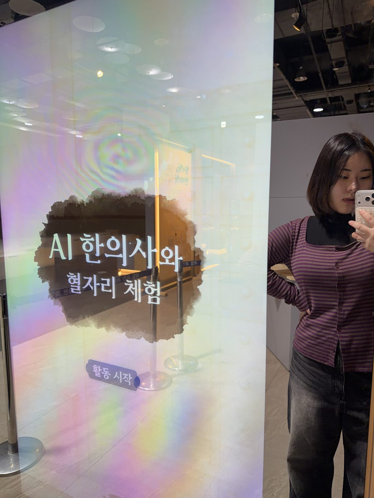

2025 · 박물관 전시
AI 한의사와 혈자리 체험
AI 한의사에게 불편한 증상을 말하면, 몸을 실시간으로 추적해 맞는 혈자리를 찾아 주는 체험입니다. 국립중앙박물관과 국립과천과학관에 전시됐습니다.

스윙크 개발팀 인턴으로 일하며 Unity와 MediaPipe 포즈 추정을 바탕으로 만든 전시 체험입니다. 관람객이 세로형 화면 앞에 서면 갓을 쓴 AI 한의사가 인사를 건네고, 머리 아픔, 콧물·코막힘, 알레르기성 비염, 어지러움, 소화불량, 스트레스처럼 불편한 곳을 고르면 관람객의 몸 위에 혈자리를 실시간으로 찾아 표시하고 지압법을 알려 줍니다.
최종적으로 국립중앙박물관과 국립과천과학관에 전시됐습니다. 연구용 데모가 아니라 처음 보는 관람객 누구나 바로 쓰는 환경이라, 다양한 체형과 조명에서도 안정적으로 동작하게 만드는 것이 중요했습니다.
같은 트래킹 기술로 만든 놀이 콘텐츠는 트래킹 프로젝트에 따로 정리했습니다.